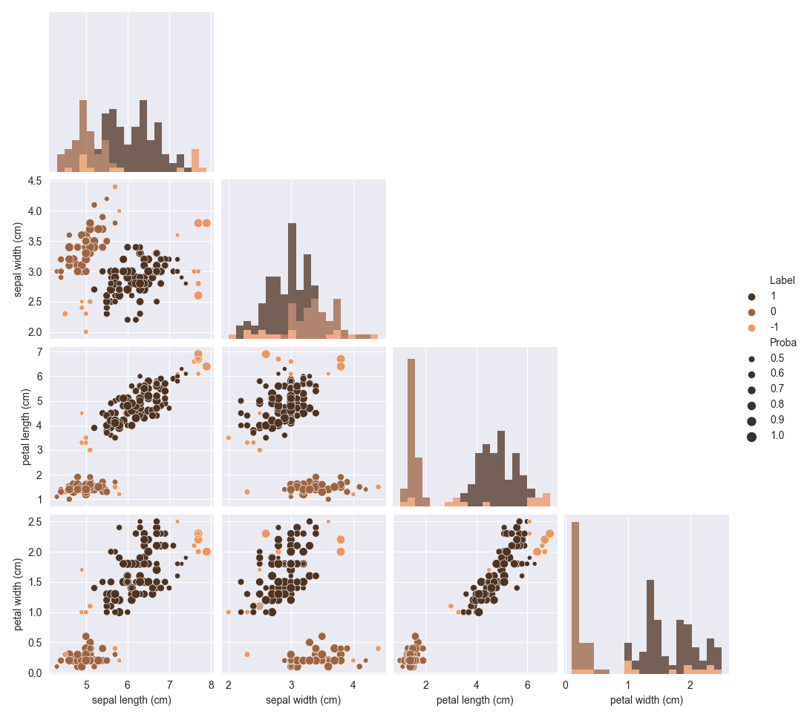
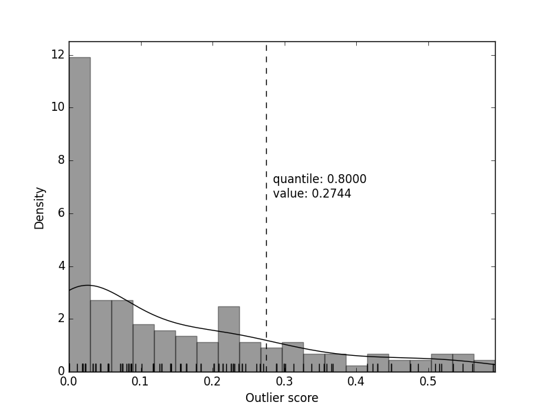

scludam.shdbscan module
Module for soft clustering numerical data using the HDBSCAN 1, 2 method.
This module provides a wrapper class for HDBSCAN 3 that adds some extra functionality:
Calculation of probability-like scores from the soft clustering method.
Cluster selection based on geometric centers.
Custom plots to visualize the results.
References
- 1
McInnes, L., Healy, J., Astels, S. (2017). HDBSCAN: Hierarchical density based clustering. Journal of Open Source Software, 2, 11.
- 2
Campello R.J.G.B., Moulavi D. y Sander J. (2013). Density-Based Clustering Based on Hierarchical Density Estimates. Advances in Knowledge Discovery and Data Mining, PAKDD 2013, Lecture Notes in Computer Science, 7819. doi: 10.1007/978-3-642-37456-2_14
- 3(1,2)
HDBSCAN: Hierarchical density-based spatial clustering of applications with noise. https://hdbscan.readthedocs.io/en/latest/
- class scludam.shdbscan.SHDBSCAN(min_cluster_size: Optional[int] = None, auto_allow_single_cluster: bool = False, allow_single_cluster: bool = False, min_samples: Optional[int] = None, metric: Union[str, Callable] = 'euclidean', noise_proba_mode: str = 'score', cluster_proba_mode: str = 'soft', outlier_quantile: Optional[float] = None, scaler: Optional[TransformerMixin] = None, clusterer: Optional[HDBSCAN] = None, data: Optional[ndarray[Any, dtype[number]][ndarray[Any, dtype[number]]]] = None, centers_provided: bool = False, centers: Optional[Union[ndarray[Any, dtype[number]][ndarray[Any, dtype[number]]], List[Union[ndarray[Any, dtype[number]][ndarray[Any, dtype[number]]], List[Number], Tuple[Number, ...]]], Tuple[Union[ndarray[Any, dtype[number]][ndarray[Any, dtype[number]]], List[Number], Tuple[Number, ...]]]]] = None, n: Optional[int] = None, d: Optional[int] = None, unique_labels: Optional[ndarray] = None, n_classes: Optional[int] = None, proba: Optional[ndarray[Any, dtype[number]][ndarray[Any, dtype[number]]]] = None, labels: Optional[ndarray[Any, dtype[number]][ndarray[Any, dtype[number]]]] = None, outlier_scores: Optional[ndarray[Any, dtype[number]][ndarray[Any, dtype[number]]]] = None)[source]
Bases:
objectSoft Hierarchical Density-Based Spatial Clustering of Applications with Noise.
Class that wraps the HDBSCAN class to provide soft clustering calculations, cluster selection and custom plots.
- Variables
min_cluster_size (Optional[int]) – Minimum size of cluster. Argument passed to HDBSCAN, by default
None. It is mandatory to provide this argument if theclustererattribute is not provided.allow_single_cluster (bool) – Whether to allow single cluster or not, by default
False. Argument passed to HDBSCAN. In case that the data only contains one cluster and noise, the hierarchical clustering algorithm will not identify the cluster unless this option is set toTrue.auto_allow_single_cluster (bool) – If
True, HDBSCAN will automatically toggleallow_single_clusterto True if no clusters are found, to return at least 1 cluster. By defaultFalse.min_samples (Optional[int]) – Minimum number of samples in a cluster, by default
None. Argument passed to HDBSCAN.metric (Union[str, Callable]) – Metric to be used in HDBSCAN, by default “euclidean”.
noise_proba_mode (str) –
Method to calculate the noise probability, by default “score”. Valid options are:
score: Use only HDBSCAN cluster membership scores to calculate noise probability, as
score = 1 - cluster_membership_score, wherecluster_membership_scoreis the HDBSCANprobabilities_value, which indicates how tied is a point to any cluster.outlier: Use
scoresas in the “score” option, andoutlier_scoresto calculate the noise probability, asnoise_proba = max(score, outlier_score). Outlier scores are calculated by HDBSCAN using the GLOSH 4 algorithm.conservative: Same method as the “outlier” option but does not allow for any point classified as noise to have a
noise_probalower than 1.
cluster_proba_mode (str) –
Method to calculate the cluster probability, by default “soft”. Valid options are:
soft: Use the HDBSCAN
all_points_membership_vectorsto calculate cluster probability, allowing for a point to be a member of multiple clusters.hard: Does not allow for a point to be a member of multiple clusters. A point can be considered noise or member of only one cluster.
outlier_quantile (Optional[float]) – Quantile of outlier scores to be used as a threshold that defines a point as outlier, classified as noise, by default
None. It must be a value between 0 and 1. If provided,noise_proba_modeis set to “outlier”. It scales HDBSCAN outlier scores so any point with an outlier score higher than the value of the provided quantile will be considered as noise.scaler (Optional[sklearn.base.TransformerMixin]) – Scaler to be used to scale the data before clustering, by default
None.clusterer (Optional[hdbscan.HDBSCAN 3]) – HDBSCAN clusterer to be used, by default
None. Used if more control is needed over the clustering algorithm. It is mandatory to provide this argument if themin_cluster_sizeattribute is not provided.n_classes (int) – Number of detected classes in the data sample. Only available after the
fit()method is called.labels (Numeric1DArray) – Labels of the data sample. Only available after the
fit()method is called. Noise points are labeled as -1, and the rest of the points are labeled with the cluster index.proba (Numeric2DArray) – Probability of each point to belog to each class, including. Only available after the
fit()method is called. Array of shape(n_samples, n_classes). The first column corresponds to the noise class.outlier_scores (Numeric1DArray) – Outlier scores of each point. Only available after the
fit()method is called.
- Raises
ValueError – If the
min_cluster_sizenor theclustererattributes are provided.
Examples
1import matplotlib.pyplot as plt 2from sklearn.datasets import load_iris 3 4from scludam import SHDBSCAN 5 6iris = load_iris() 7 8shdbscan = SHDBSCAN(min_cluster_size=20).fit(iris.data) 9 10print(shdbscan.proba.round(2)) 11# [[0. 1. 0. ] 12# [0.02 0.95 0.03] 13# ... 14# [0.18 0.08 0.74] 15# [0.03 0.05 0.92]] 16print(shdbscan.labels) 17# [ 0, 0, 0, 0, 0, 0, 0, 0, 0, 0, 0, 0, 0, 0, -1, -1, 0, 18# 0, 0, 0, 0, 0, 0, 0, 0, 0, 0, 0, 0, 0, 0, 0, 0, 0, 19# ... 20# 1, 1, 1, -1, 1, 1, 1, 1, 1, 1, 1, 1, -1, 1, 1, 1, -1, 21# 1, 1, 1, 1, 1, 1, 1, 1, 1, 1, 1, 1, 1, 1] 22 23shdbscan.pairplot( 24 diag_kind="hist", 25 palette="copper", 26 corner=True, 27 cols=iris.feature_names, 28 diag_kws={"bins": 20}, 29) 30plt.show()
References
- fit(data: ndarray[Any, dtype[number]][ndarray[Any, dtype[number]]], centers: Union[ndarray[Any, dtype[number]][ndarray[Any, dtype[number]]], List[Union[ndarray[Any, dtype[number]][ndarray[Any, dtype[number]]], List[Number], Tuple[Number, ...]]], Tuple[Union[ndarray[Any, dtype[number]][ndarray[Any, dtype[number]]], List[Number], Tuple[Number, ...]]], None, ndarray[Any, dtype[number]][ndarray[Any, dtype[number]]], List[Number], Tuple[Number, ...]] = None)[source]
Fit the clusterer to the data.
It uses the provided configuration to identify clusters, classify the data and provide membership probabilities. The results are stored in the
SHDBSCANinstance. The attributes storing results aren_classes,labels,probaandoutlier_scores.- Parameters
data (Numeric2DArray) – Data to be clustered.
centers (Union[Numeric2DArrayLike, Numeric1DArrayLike], optional) – Center or array of centers of clusters, by default
None. If provided, only the clusters that are geometrically closer to the provided centers will be considered. This option is useful for ignoring clusters in a multiple cluster scenario.
- Returns
Fitted instance of the
SHDBSCANclass.- Return type
- Raises
ValueError – If the dimensions of the centers array do not match the dimensions of the data array.
- validity_index(**kwargs)[source]
Compute the validity index of the clustering.
Calculates HDBSCAN density validity index 5 for the labels obtained from the clustering.
kwargsare passed to the HDBSCANvalidity_indexmethod.- Returns
float – Density based cluster validity index between -1 and 1. A higher value means a better clustering.
Numeric1DArray – Array of cluster validity indices for each cluster, only if
per_cluster_scoreskwarg is set to True.
- Raises
Exception – If the clustering has not been performed yet.
References
- pairplot(**kwargs)[source]
Plot the clustering results in a pairplot.
It uses the
pairprobaplot(). The colors of the points represent class labels. The sizes of the points reresent the probability of belonging to the most probable class.- Returns
Pairplot of the clustering results.
- Return type
seaborn.PairGrid
- Raises
Exception – If the clustering has not been performed yet.
- tsneplot(**kwargs)[source]
Plot the clustering results in a t-SNE plot.
It uses the
tsneprobaplot()function. It represents the data in a 2 dimensional space using t-SNE. The colors of the points represent class labels. The sizes of the points represent the probability of belonging to the most probable class.- Returns
Plot of the clustering results.
- Return type
matplotlib.axes.Axes
- Raises
Exception – If the clustering has not been performed yet.
- scatter3dplot(**kwargs)[source]
Plot the clustering results in a 3D scatter plot.
It uses the
scatter3dprobaplot()function. It represents the data in a 3 dimensional space using the variables given by the user. The colors of the points represent class labels. The sizes of the points represent the probability of belonging to the most probable class.- Returns
Plot of the clustering results.
- Return type
matplotlib.collections.PathCollection
- Raises
Exception – If the clustering has not been performed yet.
- surfplot(**kwargs)[source]
Plot the clustering results in a 3D surface plot.
It uses the
surfprobaplot()function. The heights of the surface and colors of the points represent the probability of belonging to the most probable cluster, excluding the noise class. The data is represented in two dimensions, given by the user.- Returns
Plot of the clustering results.
- Return type
matplotlib.collections.PathCollection
- Raises
Exception – If the clustering has not been performed yet.
- outlierplot(**kwargs)[source]
Plot the distribution of outlier scores.
Includes an indicator of
outlier_quantileif provided. It is useful for choosing an appropriate value foroutlier_quantile. Uses seaborn displot function 6.- Returns
Plot of the outlier scores distribution.
- Return type
matplotlib.axes.Axes
- Raises
Exception – If the clustering has not been performed yet.
Examples
1import matplotlib.pyplot as plt 2from sklearn.datasets import load_iris 3 4from scludam import SHDBSCAN 5 6iris = load_iris() 7 8shdbscan = SHDBSCAN(min_cluster_size=20, outlier_quantile=0.8).fit(iris.data) 9 10shdbscan.outlierplot(bins=20, color='k') 11plt.show()
References